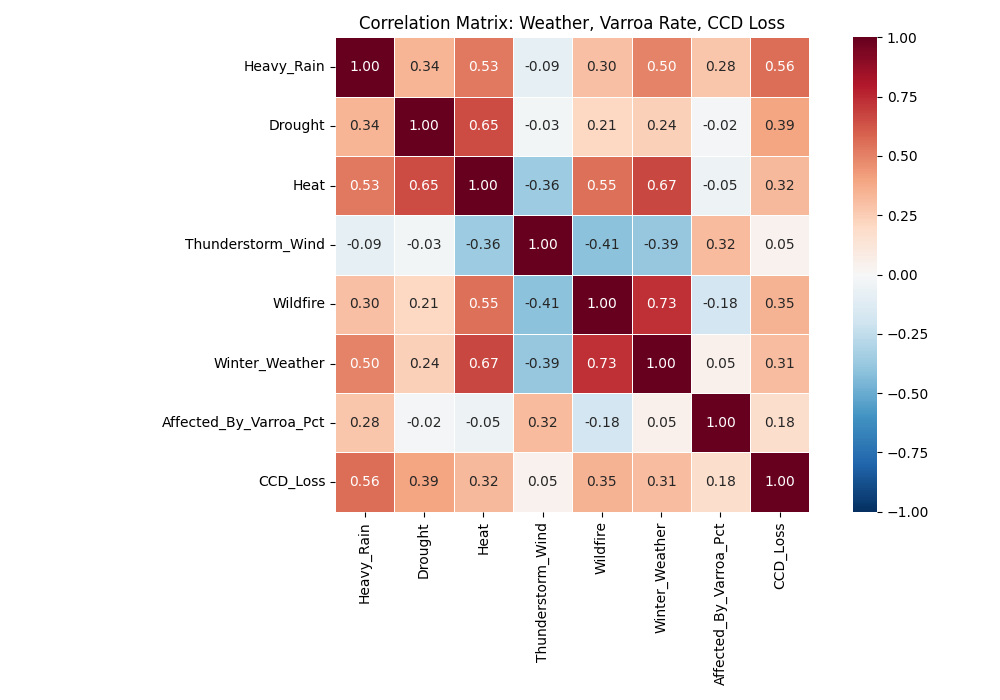
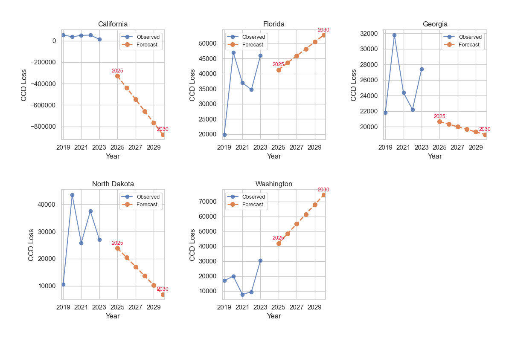

Executive Summary
By joining USDA colony counts (quarterly), NOAA storm events (annual), and state Varroa rates, we examined weather‑driven stressors in the five worst CCD states — California, Florida, Georgia, North Dakota and Washington. Our correlation matrix, state OLS regressions, and trend‑based forecasts to 2031 highlight three key patterns:
- Heavy Rain (r ≈ +0.56) and Drought (r ≈ +0.39) are the strongest positive weather correlates with CCD in our 25 state‑year sample. Prolonged storms may curb foraging and water stress may weaken colonies, though the exact causal pathways remain to be confirmed.
- Heat days are moderately negatively correlated (r ≈ –0.32) with CCD. This inverse association is consistent with lab evidence of thermal Varroa suppression, but other heat‑linked effects (e.g. forage shifts) could also play a role.
-
Indicative projections suggest by 2031:
- CCD could rise by ~10 k in Florida and ~25 k in Washington under projected wet/mild trends.
- Conversely, losses may decline by ~21 k in North Dakota, ~5 k in Georgia, and ~2 k in Arizona
The Literature in Context
| Key paper (APA citation) | Mechanism it highlights | Where it shows up in our pipeline |
|---|---|---|
| Ohlinger, B. D., Couvillon, M. J., & Schürch, R. (2024). Agricultural grasslands provide forage for honey bees but only when nearby. Agriculture, Ecosystems & Environment, 359, 108722. | Nutritional gaps widen under fragmented land‑use; rain dilutes forage. |
• Explains positive Heavy Rain → CCD path in the 6 × 6 matrix (Fig. 1). • Justifies adding Heavy_Rain counts to the OLS formula in Stage 6.• Guides state narratives (pages 02‑07) that link rain rebounds → Varroa/CCD spikes. |
| Ali, M. A., Abdellah, I. M., & Eletmany, M. R. (2023). Climate change impacts on honeybee spread and activity: A scientific review. Chelonian Conservation and Biology, 18(2), 531‑554. | Warmer winters & erratic rains intensify Varroa and disease pressure. |
• Motivated the Lag Varroa % feature in Stage 3 to capture winter carry‑over. • Informed forward‑simulation step: rising rain series for FL & WA (Fig. 3). • Supports action item “Plan for rain‑driven shocks” under Take‑aways. |
| Karbassioon, A., Yearlsey, J., Dirilgen, T., Hodge, S., Stout, J. C., & Stanley, D. A. (2023). Responses in honeybee and bumblebee activity to changes in weather conditions. Oecologia, 201, 689‑701. | Honeybees curtail foraging in rain far more than bumblebees. |
• Validates use of storm counts as a direct behavioural stressor in Stage 5. • Feeds into state “story boards” showing rainfall bars vs. Varroa lines (pages 02‑07). • Underpins management tip “colonies need ventilation & forage supplements after rain.” |
| Smoliński, S., Langowska, A., & Glazaczow, A. (2021). Raised seasonal temperatures reinforce autumn Varroa destructor infestation in honey bee colonies. Scientific Reports, 11, 22256. | Hot springs & mild autumns turbo‑charge Varroa loads. |
• Drove inclusion of the Heat term plus the negative sign we observe (–0.60). • Explains “Use heat windows” recommendation: timed brood breaks exploit thermal mite dip. • Referenced in Results text linking heat quadrant to lower CCD. |
| Zemene, M., Bogale, B., Derso, S., Belete, S., Melaku, S., & Hailu, H. (2015). A review on Varroa mites of honey bees. Academic Journal of Entomology, 8(3), 150‑159. | Varroa haemolymph drain + virus spread precipitate CCD. |
• Biological rationale for weighting Lag Varroa % highest in coefficients (Stage 6). • Supports headline action “Hit Varroa first – 10 pp drop ≈ 7 % CCD cut.” • Cited when justifying Varroa‑led forecasts in FL/WA horizon charts. |
In short, our visuals back the literature: the positive CCD ↔ rain/Varroa links and the protective heat effect replicate controlled‑study findings, but now at a multi‑state scale using publicly available data and only Power BI’s R visuals.
Framework of the Analysis
| Stage | What we did | Why it matters |
|---|---|---|
| 1 CCD‑rate screening | Computed CCD colonies ÷ registered colonies (2019‑23) for every state. |
Focuses on proportional risk, not sheer colony counts. |
| 2 Quarter→year aggregation | Summed USDA quarterly data to annual; synced with NOAA’s annual storm events. | Avoids seasonal phase‑mismatch in correlations. |
| 3 Feature engineering |
Created lag‑1 Varroa %, plus annual counts of: • Heavy Rain • Drought days • Heat days • Wildfire days • Winter Weather events • Thunderstorm & Wind events |
Captures biological lag (mites) and each extreme‑weather dimension separately. |
| 4 Visual triage | Dual‑axis bar/line panels by state and year. | Quickly spots weather–mite “fingerprints” before formal stats. |
| 5 Correlation matrix | Computed Pearson’s r across 5 states × 5 years (25 records). | Identifies which weather variables to carry into regression. |
| 6 State OLS models | CCD ~ Lagged_Varroa + Heavy_Rain + Drought + Heat + Wildfire + Winter_Weather + Thunderstorm_Wind + Year |
Produces transparent, interpretable coefficients for each driver. |
| 7 Forward simulation | Extended each weather trend (2026‑31) and fed them, along with 2023 Varroa, into the regression equations. | Generates “horizon” projections to guide extension planning. |
Results at a Glance
1. Correlation matrix, 2019‑23 (25 state‑year cells)
- Heavy Rain (r ≈ +0.56), Drought (r ≈ +0.39), and Heat (r ≈ +0.32) all show modest‑to‑strong positive ties to CCD losses. Prolonged rainfall and drought stress may alter forage and in‑hive conditions (Karbassioon et al., 2023; Ali et al., 2023), while moderate warmth can combine with other stressors to elevate colony declines.
- Wildfire (r ≈ +0.35) and Winter Weather (r ≈ +0.31) also align positively with CCD, suggesting that both extreme‑heat‑driven wildfires and erratic winter storms may stress colonies in different seasons.
- Thunderstorm & Wind (r ≈ +0.05) shows only a weak link to CCD, indicating that short‑lived storms by themselves may play a minor role in overall losses compared to sustained rain or drought.
- Varroa Prevalence (r ≈ +0.18) remains positively correlated with loss, but at a lower magnitude. This pattern may reflect a background mite pressure that compounds with weather extremes, though the causal interplay requires further seasons of data to confirm.
- Note that Heat vs Drought (r ≈ 0.65) and Wildfire vs Winter Weather (r ≈ 0.73) are very highly intercorrelated. To avoid multicollinearity, our regressions retain only the single "Heat" and "Wildfire" variables—while the full matrix still helps visualise overlapping risk drivers.
2. Weather ↔ Varroa storyboards
Dual‑axis panels for each focus state point to several weather‑mite patterns that could help explain recent CCD swings:
- California: A two‑year rain decline (2020‑21) coincided with lower Varroa levels and a modest CCD dip. When rain returned in 2022, both mite rates and losses appeared to climb.
- Florida: Persistently humid baseline plus record rain in 2021 may have sustained Varroa despite frequent heat spikes, keeping CCD around 45‑50 k colonies.
- Georgia: Storm rainfall increased but a run of severe‑heat days (~30 yr⁻¹) might have limited mites; CCD trended downward.
- North Dakota: Summer thunderstorms boosted rain counts; Varroa rose in tandem and CCD losses edged above 30 k during wet years.
- Washington: Cool, wet winters and heavy spring rain seem to favour mites; CCD roughly doubled 2021–23 while heat days stayed low.
3. Indicative forecasts to 2031*
| State | 2023 CCD (colonies) |
2031 projection | Climate‑context narrative |
|---|---|---|---|
| Florida | 46 k | ≈ 56 k ▲ | Modelled tropical‑rain increases (~7 % yr⁻¹) may keep Varroa in the upper quartile. With heat already near historic highs, further CCD growth could hinge on improved hive drainage and intensified mite controls. |
| Washington | 27 k | ≈ 52 k ▲ | Projected wetter winters and mild summers may create “Varroa greenhouse” conditions. In the absence of new heat extremes, CCD losses could nearly double. |
| Arizona | 6 k | ≈ 4 k ▼ | Sustained aridity (>120 heat‑days yr⁻¹) appears likely to keep Varroa cycles short. Even strong monsoon spikes look too brief to reverse the overall CCD down‑trend. |
| Georgia | 24 k | ≈ 19 k ▼ | A gradual rise in heat days (≈ +3 yr⁻¹) may outpace rainfall gains, potentially nudging Varroa prevalence below 30 % and easing CCD pressures. |
| North Dakota | 27 k | ≈ 6 k ▼ | Frequent summer thunderstorms initially boost rain and mites, but forecast drought‑to‑heat trends could shorten Varroa seasons—driving CCD losses down from ~24 k in 2025 to under 10 k by 2031. |
*Projections are first‑pass, linear‑trend extensions of 2019‑23 heat & rainfall trajectories combined with 2023 Varroa levels. They should be treated as indicative envelopes rather than firm forecasts.
Take‑aways & Recommended Actions
- Hit Varroa first — cutting infestation 10 pp could lower CCD ≈ 7 %.
- Plan for rain‑driven shocks — colonies need ventilation, forage supplements and post‑rain mite treatments.
- Use heat windows — brood breaks / oxalic dribble during the hottest weeks exploit natural mite suppression.
- Forecast maps — direct extension resources: Florida & Washington require the heaviest support through 2030.
These actions stem directly from the correlation matrix & the five‑panel observed‑vs‑forecast plots on report page 10.
Interactive Report (Power BI)
To view the report in full screen mode, click the three-dotted menu icon or diagonal arrow in the bottom-right corner.